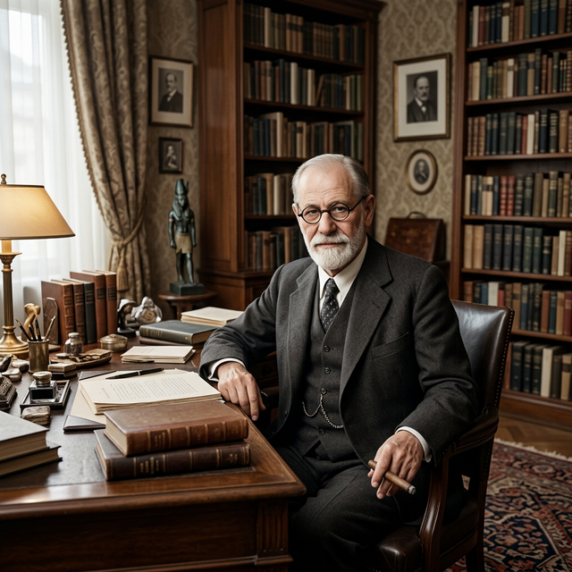

1856 - Viena, Austria
1939 - Londres, Reino Unido
Sigmund Freud
Sigmund Freud (1856–1939) fue un médico neurólogo austríaco y el fundador del psicoanálisis, una de las corrientes más influyentes en la historia de la psicología. Sus desarrollos teóricos introdujeron una nueva forma de comprender la mente humana, el origen de los síntomas psíquicos y el papel de los procesos inconscientes en la vida psíquica.
Freud nació el 6 de mayo de 1856 en Freiberg, Moravia (actual República Checa), en el seno de una familia judía. Cuando tenía cuatro años su familia se trasladó a Viena, ciudad donde transcurrió la mayor parte de su vida y donde desarrolló su formación académica y su obra intelectual.
Formación y Primeros Años
Estudió medicina en la Universidad de Viena, graduándose en 1881. Durante sus primeros años de formación se dedicó a la investigación en neurología y al estudio del sistema nervioso. Posteriormente trabajó en el Hospital General de Viena, donde comenzó a interesarse por los trastornos nerviosos y por las manifestaciones psíquicas de los síntomas físicos.
El Origen del Psicoanálisis
Un momento decisivo en el desarrollo de su pensamiento fue su trabajo con Joseph Breuer, especialmente en el tratamiento de pacientes con histeria. A partir de estas experiencias clínicas, Freud comenzó a formular las primeras hipótesis que darían origen al psicoanálisis. En este contexto surgieron también los primeros intentos de tratamiento mediante técnicas como la hipnosis y la catarsis, que luego evolucionarían hacia el método propio del psicoanálisis.
El Descubrimiento del Inconsciente
Uno de los aportes centrales de Freud fue la formulación del concepto de inconsciente, entendido como un conjunto de procesos psíquicos que influyen en el pensamiento, las emociones y la conducta sin que el sujeto tenga conciencia directa de ellos. Según Freud, muchos síntomas psicológicos pueden comprenderse a partir de conflictos internos, deseos reprimidos o experiencias no elaboradas que permanecen fuera de la conciencia.
Modelo Estructural de la Mente
En el desarrollo de su teoría, Freud propuso un modelo estructural de la mente compuesto por ello, yo y superyó. El ello representa las pulsiones y deseos más primitivos que buscan satisfacción inmediata; el yo actúa como mediador entre esas demandas y las exigencias de la realidad; y el superyó representa las normas morales y valores internalizados.
Metodología: Asociación Libre
Entre las técnicas desarrolladas dentro del método psicoanalítico, una de las más importantes es la asociación libre. En ella, el paciente es invitado a expresar pensamientos, recuerdos y emociones sin censura ni selección previa. Este procedimiento permite explorar contenidos inconscientes que pueden estar vinculados con el origen de los síntomas.
Grandes Obras y Consolidación
En 1900 Freud publicó La interpretación de los sueños, una de sus obras más influyentes, donde planteó que los sueños constituyen una vía privilegiada para acceder al inconsciente. A partir de sus trabajos y de la formación de un grupo de discípulos y colaboradores, el psicoanálisis comenzó a consolidarse como un movimiento teórico y clínico.
Últimos Años y Legado
Durante las décadas siguientes, Freud continuó desarrollando su obra y ampliando su teoría. En 1923 fue diagnosticado con cáncer maxilobucal, enfermedad que requirió numerosas intervenciones quirúrgicas. A pesar de estas dificultades, continuó escribiendo y trabajando durante muchos años.
En 1938, ante el avance del nazismo y la persecución a la población judía, Freud se vio obligado a abandonar Viena y trasladarse a Londres, donde falleció el 23 de septiembre de 1939.
La obra de Freud tuvo un profundo impacto en la psicología, la psiquiatría, la cultura y las ciencias humanas en general. Si bien sus teorías han sido objeto de debates, críticas y revisiones, su influencia en la comprensión de la subjetividad, la infancia, la sexualidad y los procesos inconscientes continúa siendo fundamental para el desarrollo del pensamiento psicológico contemporáneo.